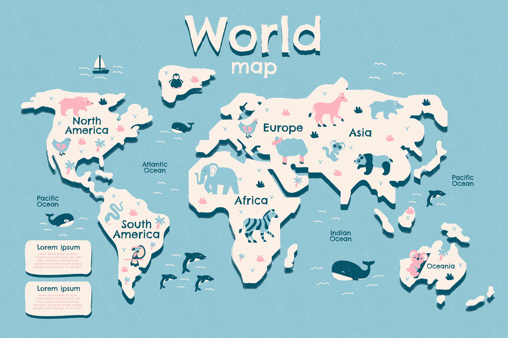
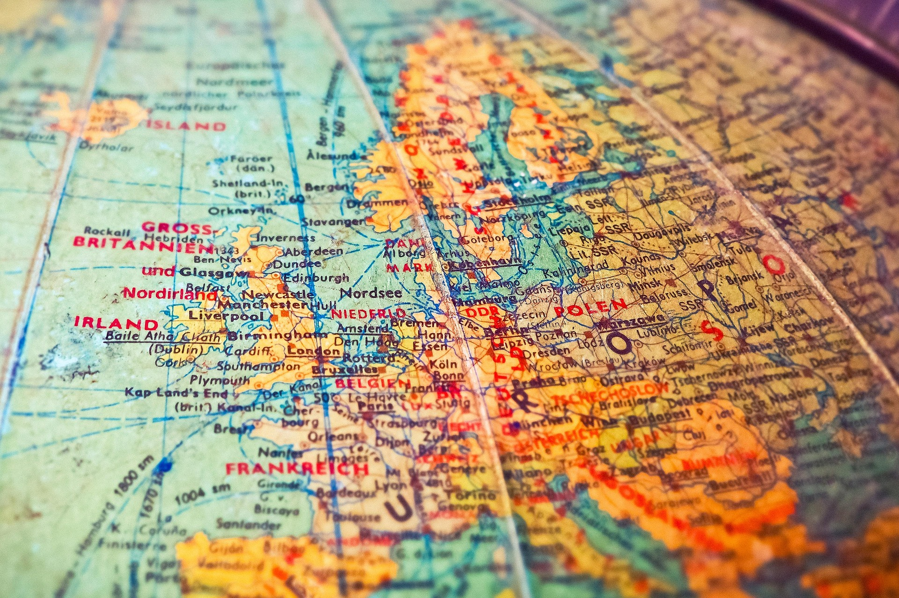

Secțiune de testare
Teste de geografie
Alege un test și exersează-ți cunoștințele despre lume. Poți începe cu întrebări introductive și apoi poți trece la provocări mai dificile.


Test selectat
Selectează un test pentru a vedea aici ce ai ales.
Cum alegi testul potrivit
Pentru început
Alege testele despre steaguri sau capitale dacă vrei o introducere mai simplă.
Pentru antrenament
Refă testele de mai multe ori pentru a observa progresul și pentru a memora mai ușor.
Pentru provocare
Încearcă testul continentelor și al granițelor dacă vrei întrebări ceva mai dificile.